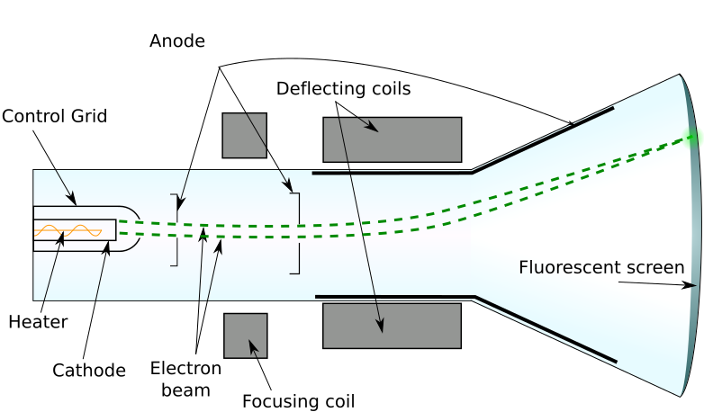
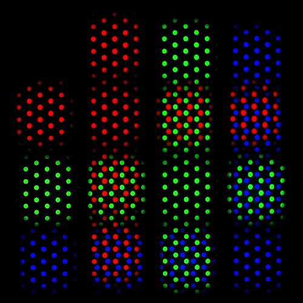

Computer Graphics
Hardware & Software
Display devices and systems, plus the software foundations of graphics: coordinate representations, graphics functions, and an introduction to OpenGL with the GLUT toolkit.
Module Roadmap
Two halves: the hardware that shows pixels, and the software that commands them
Part A · Graphics Hardware
- Video display devices
- Raster scan systems
- Random scan (vector) displays
- Colour CRT monitors
- Flat panel displays and LCDs
- Graphics workstations and viewing systems
Part B · Graphics Software
- Coordinate representations
- Graphics functions
- Introduction to OpenGL
- Related libraries and GLUT
- A complete OpenGL program
- Error handling in OpenGL
What is Computer Graphics?
Creating, storing and manipulating pictures with a computer
A picture on screen is a grid of tiny coloured squares called pixels (picture elements). The colour of every pixel is held in memory called the frame buffer, and the display hardware reads this memory many times per second to keep the image visible.
Interactive
Games, VR and CAD, where the user changes the image in real time.
Passive
Rendered films and pre-computed animation that the user only views.
Visualization
Medical imaging, scientific and data visualization.
Design
CAD and CAM for engineering and architecture.
Video Display Devices
The monitor is the primary output device of a graphics system
Most traditional monitors use the Cathode Ray Tube (CRT) design, while modern displays use flat panel technologies. In all of them the picture must be refreshed repeatedly because the glowing phosphor or the pixel state fades.
The Cathode Ray Tube (CRT)
A beam of electrons draws light on a phosphor coated screen

Raster Scan Systems
The most common technique: the screen is a matrix of pixels
The electron beam sweeps the screen one horizontal row at a time, from top to bottom. Each row is a scan line. The picture is stored in the frame buffer, where every pixel has a stored intensity or colour.
- Bitmap: one bit per pixel, black and white.
- Pixmap: multiple bits per pixel for colour.
- Horizontal retrace: beam jumps back to the left after each line.
- Vertical retrace: beam jumps to the top after each full frame.
- Interlacing: refresh odd lines, then even lines, to reduce flicker.
Random Scan (Vector) Displays
The beam draws only the lines that make up the picture
Also called vector, stroke writing or calligraphic displays. The picture is stored as a set of line drawing commands in a display list (refresh display file), and the beam traces those lines directly.
- Refresh rate depends on the number of lines to draw.
- Produces very smooth, high quality line drawings.
- Cannot easily show shaded, filled or photographic images.
Raster vs Random Scan
Two very different ways to build a picture
Raster Scan
- Picture is a matrix of pixels
- Stored in a frame buffer
- Great for shaded, realistic scenes
- Lines can look jagged (staircase effect)
- Used in almost all modern displays
Random Scan
- Picture is a set of line segments
- Stored in a display list
- Great for smooth line art
- Cannot show filled or photo images well
- Mostly obsolete today
Colour CRT Monitors
Producing colour by combining light from phosphors
Beam Penetration
- Used with random scan monitors.
- Two phosphor layers: red and green.
- Beam speed and voltage decide how deep it penetrates.
- Only four colours: red, green, orange, yellow.
Shadow Mask
- Used with raster scan; produces millions of colours.
- Each pixel is a triad of red, green and blue phosphor dots.
- Three electron guns, one per colour.
- A perforated shadow mask ensures each beam hits only its own dot.

Flat Panel Displays
Thinner, lighter and lower power than the CRT
Emissive
Convert electrical energy directly into light.
Plasma panels
Gas discharge between glass plates.
Electroluminescent
Thin film that glows under voltage.
LED
Light emitting diodes.
Non Emissive
Use optical effects to turn ambient light or a backlight into a picture.
LCD
Liquid Crystal Displays, the dominant non emissive type.
Liquid Crystal Displays (LCD)
Light is passed or blocked by twisting crystals
Passive vs Active matrix
- Passive matrix: a grid of conductors addresses pixels by row and column.
- Active matrix (TFT): a thin film transistor at every pixel gives sharper, faster images with better contrast.

Graphics Workstations and Viewing Systems
Complete systems for professional graphics work
High resolution
Large screens, often 2560 x 2048 or higher, sometimes multiple monitors.
Fast GPUs
Powerful graphics processors for real time rendering.
Stereoscopic
Separate left and right eye views create a sense of depth.
Virtual reality
Head mounted displays with head tracking immerse the user in a scene.
Computer Graphics
Software
From coordinate systems and graphics functions to the OpenGL API, GLUT window management, a complete program, and error handling.
Graphics Software Categories
General programming packages
A library of graphics functions callable from a language such as C, C++ or Java. They provide primitives, attributes, transformations, viewing and input.
Example: OpenGL
Special purpose applications
Ready made packages designed for non programmers to create pictures or models in a specific domain.
Examples: CAD, paint and draw apps, medical imaging
Coordinate Representations
A scene passes through several coordinate systems before it reaches the screen
- Modelling (local) coordinates: each object is defined in its own frame.
- World coordinates: all objects are placed in one common scene.
- Normalized coordinates: mapped to a standard 0 to 1 range for portability.
- Device (screen) coordinates: final integer pixel positions on the display.
Graphics Functions
A general package groups its functions into these categories
Primitives
Points, lines, polygons and text, the basic building blocks.
Attributes
Colour, line style, fill pattern and text font.
Transformations
Translate, rotate and scale objects.
Viewing
Choose what part of the scene is shown and where.
Input
Handle mouse, keyboard and other devices.
Control
Initialize, manage errors and talk to the system.
Introduction to OpenGL
A cross platform, hardware independent graphics API
- OpenGL means Open Graphics Library, a device independent API.
- Provides a few hundred functions for 2D and 3D graphics.
- Works as a state machine: you set states such as colour, then draw.
- Functions begin with
gl; constants begin withGL_.
Naming convention
A suffix tells you the argument count and data type.
glColor3f(...) // 3 args, float
glVertex2i(...) // 2 args, integer
glVertex3fv(...) // 3 float, vectorTypes: i integer, f
float, d double, v array.
Related Libraries
OpenGL is usually paired with helper libraries
| Library | Prefix | Purpose |
|---|---|---|
| OpenGL core (GL) | gl | Core drawing and state functions |
| OpenGL Utility (GLU) | glu | Higher level routines: quadrics, curves, viewing setup |
| OpenGL Utility Toolkit (GLUT) | glut | Windowing, menus and input, platform independent |
| System glue (GLX, WGL) | varies | Connect OpenGL to the operating system window |
Display Window Management with GLUT
The standard sequence to open a window and begin drawing
glutInit(&argc, argv); // initialize GLUT
glutInitDisplayMode(GLUT_SINGLE | GLUT_RGB); // buffer and colour mode
glutInitWindowPosition(50, 100); // top left corner
glutInitWindowSize(400, 300); // width, height
glutCreateWindow("My First OpenGL Program"); // title bar textGLUT_SINGLEuses one frame buffer;GLUT_DOUBLEuses double buffering for smooth animation.GLUT_RGBselects RGB colour mode.glutDisplayFunc(fn)registers the callback that draws the scene.glutMainLoop()starts the event loop and does not return.
A Complete OpenGL Program
Draw a line segment, the classic first program
#include <GL/glut.h>
void init(void) {
glClearColor(1.0, 1.0, 1.0, 0.0); // white background
glMatrixMode(GL_PROJECTION);
gluOrtho2D(0.0, 200.0, 0.0, 150.0); // 2D world window
}
void lineSegment(void) {
glClear(GL_COLOR_BUFFER_BIT); // clear the window
glColor3f(0.0, 0.0, 1.0); // blue
glBegin(GL_LINES);
glVertex2i(180, 15);
glVertex2i(10, 145);
glEnd();
glFlush(); // send to display
}
int main(int argc, char** argv) {
glutInit(&argc, argv);
glutInitDisplayMode(GLUT_SINGLE | GLUT_RGB);
glutInitWindowPosition(50, 100);
glutInitWindowSize(400, 300);
glutCreateWindow("Line Segment");
init();
glutDisplayFunc(lineSegment);
glutMainLoop();
return 0;
}Error Handling in OpenGL
OpenGL records errors in a flag you can query at any time
When a function is called with invalid arguments or in an invalid state, an
error flag is set. You read it with glGetError()
and turn the code into text with gluErrorString().
GLenum code = glGetError();
if (code != GL_NO_ERROR)
printf("%s", gluErrorString(code));Common error codes
| Code | Meaning |
|---|---|
| GL_NO_ERROR | No error |
| GL_INVALID_ENUM | Bad enum argument |
| GL_INVALID_VALUE | Numeric argument out of range |
| GL_INVALID_OPERATION | Operation not allowed in this state |
| GL_OUT_OF_MEMORY | Not enough memory |
Module 1 Summary
Hardware
- CRT: electron beam plus phosphor, needs refresh.
- Raster uses a pixel matrix and frame buffer; random uses a line list.
- Colour CRT: beam penetration and shadow mask (RGB).
- Flat panels: emissive (plasma, LED) and non emissive (LCD).
Software
- Coordinate pipeline: modelling to world to device.
- Function groups: primitives, attributes, transforms, viewing, input.
- OpenGL plus GLU plus GLUT, using a state machine model.
- Complete program structure and
glGetError.
Sources & References
Textbook chapters, official documentation and image credits for this module
Primary reading
- Hearn, Baker & Carithers, Computer Graphics with OpenGL, 4th ed., Pearson, 2014, Chapter 1 (A Survey of Computer Graphics) and Chapter 2 (Overview of Graphics Systems).
- Official API docs: Khronos OpenGL Registry, OpenGL / GLU reference pages.
Image credits
- CRT diagram: Interiot / Theresa Knott, Wikimedia Commons, CC BY-SA 3.0.
- Shadow mask close-up: Selcuk Oral (Drumex), Wikimedia Commons, CC BY-SA 3.0.
- LCD layers: Ed g2s, Wikimedia Commons, CC BY-SA 3.0.